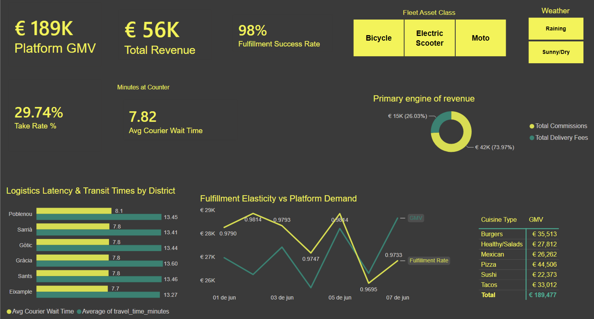
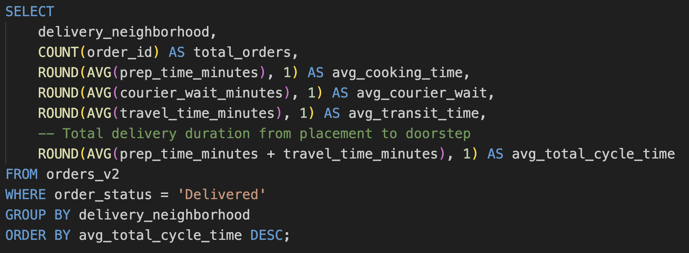
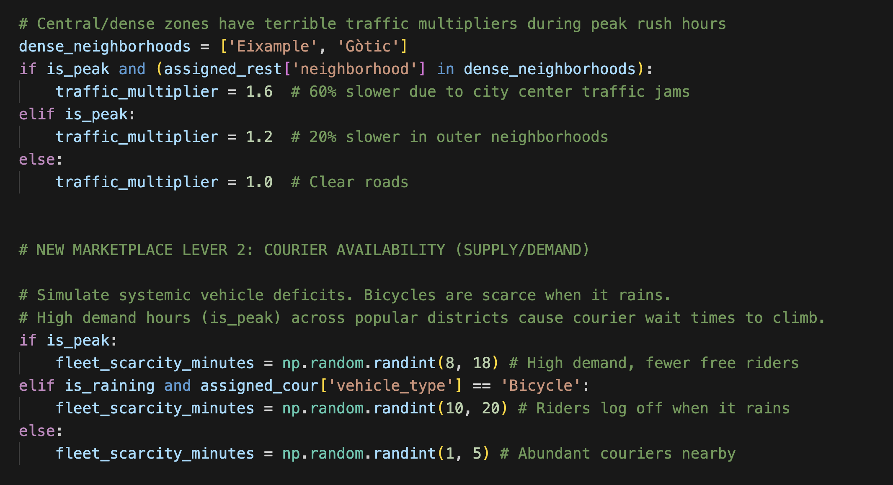
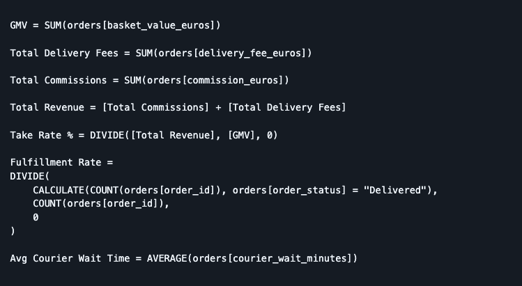

00 Executive summary
This project designs and deploys an end-to-end analytics data pipeline simulating a three-way logistics marketplace — users, merchants, and couriers — based on the operational models of urban delivery platforms like Glovo. Moving beyond flat-file reporting, the framework tracks marketplace volatility, isolates localized supply and demand bottlenecks across Barcelona districts, evaluates platform unit economics, and implements a machine learning model forecasting end-to-door fulfillment timelines.
I structured the work around five business questions an operations team would actually ask.
01 Where are the core logistical bottlenecks across the city?
Using advanced aggregation in SQL mapped into Power BI, I isolated the exact segments of the delivery cycle — preparation time vs. idle courier wait vs. transit time — across different Barcelona districts.
The answer: the heaviest friction isn't always distant travel. Dense central zones like Eixample and Gòtic create severe bottlenecks, and kitchen congestion plus dispatch delays during peak hours contribute more to overall delays than physical delivery distance does.

02 How severely do rainstorms disrupt the fleet and cause revenue leaks?
I built weather and vehicle constraints directly into the data engine to track how rain scales courier behavior and alters customer fulfillment.
The answer: during rainstorms, bicycle couriers log off the app, triggering severe fleet scarcity. The scarcity compounds delays past critical thresholds and causes an immediate €3,000 drop in GMV from order cancellations — putting a concrete financial penalty on failing to rebalance the fleet in bad weather.

03 Who are the lowest-performing couriers needing operational coaching?
I wrote a SQL window function using PERCENT_RANK() to categorize couriers fairly — partitioned by vehicle asset class, so a bicycle rider is never unfairly compared against a motorcycle rider.
The answer: operations managers can dynamically pull an automated list of the bottom 10% worst-rated couriers within each vehicle category for targeted training or quality controls.
04 How effectively does the platform monetize its transaction volume?
I moved past basic volume tracking and engineered a strict platform unit-economics model in Power BI with custom DAX measures, separating Gross Merchandise Value (GMV) from partner commissions (22%) and delivery fees to calculate the platform's true Take Rate %.
The answer: the model shows exactly how much the platform keeps out of every transaction — and that business viability relies heavily on high-margin merchant commissions rather than user delivery fees.

05 Can we predict delivery timelines despite real-world marketplace chaos?
I trained an XGBoost regressor, caught a critical sequential-timeline flaw in the target formula along the way, and refactored the pipeline to capture the full logistics reality — feeding the model individual merchant speed baselines, environmental data, and hour-of-day traffic multipliers.
The answer: yes. The model reaches an R² of 0.75 with a mean absolute error of 3.92 minutes, proving nearly half of all delivery volatility is predictable — enough for a platform to delay courier dispatching, protect rider hourly capacity, and save substantially on idle wait-time overhead.
06 Results at a glance
07 Conclusion
Overall, this project demonstrates how an operational data pipeline built with Python → SQL → Power BI can transform raw transactional data into actionable insights. By engineering a marketplace simulation, normalizing relational tables with strict database integrity, and building an XGBoost machine learning layer, this pipeline successfully quantifies revenue leakage, flags fleet bottlenecks, and protects platform profit margins to support smarter, automated logistics decisions.